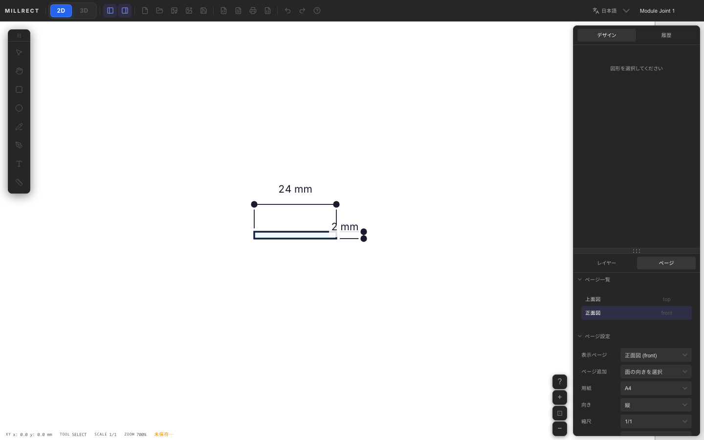
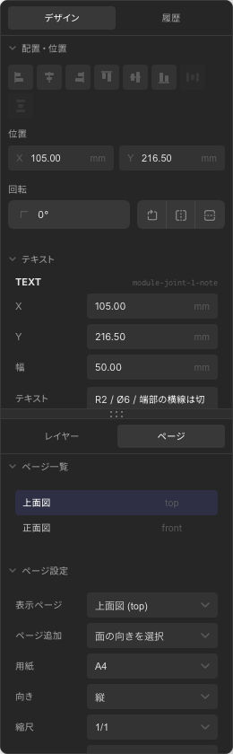

3D 生成
上面図・正面図・右側面図など、複数の正投影図を組み合わせて 3D モデルを生成する方法を説明します。



仕組み
Millrect では、各ページの「閉じた輪郭」を、そのページの投影方向へ伸ばした立体同士を 交差させることで、最終的な 3D 形状を求めます。
イメージとしては、上面・正面・側面それぞれから作った「板」が重なる部分が、実際の立体になります。3 方向そろうと、形のイメージがより分かりやすくなります。
上面図だけ、または正面図だけでは立体は作れません。 最低でも異なる 2 方向（例: 上面 + 正面、上面 + 右側面）のページが必要です。
面の向きを選んでページ追加
各ページが「どの方向から見た図面か」は、右パネル Pages タブの
ページ追加で決めます。上面図・正面図・右側面図など、追加したい面を選ぶと、その向きのページが作成されます。
既に存在する面は追加メニューで無効になり、同じ front などを重複して追加できません。

| 設定 | 意味 |
|---|---|
| 上面図 (top) | 上から見下ろした図（幅 × 奥行） |
| 正面図 (front) | 正面から見た図（幅 × 高さ） |
| 右側面図 (right) | 右側から見た図（奥行 × 高さ） |
| 下面 / 背面 / 左側面 | 反対方向からの投影図 |
空のプロジェクトから始める
＋ 新規プロジェクトで空のキャンバスを作成し、Pages タブから必要な面を追加します。
- 上面図: 幅 × 奥行の輪郭を描く
- 正面図: 幅 × 高さの輪郭を描く
- 右側面図: 奥行 × 高さの輪郭を描く（必要に応じて追加）
制作例: Module Joint 1（24×100×2 mm）
ドキュメントでは、実プロダクト Module Joint 1 を共通題材にします。 A4 縦・1:1 スケールで、24×100 mm の外形、Ø6 穴、R2、切り込み線、板厚 2 mm を確認できる密度にしています。
3D の仕組みは単純な矩形でも理解できますが、実プロダクトで見ると、 図面・寸法・穴・断面・STL までが同じ流れとしてつながります。
- 上面 — 24×100 mm の外形、Ø6 穴、切り込み線 →
drawing-rect.png - 設計図化 — 24 mm、100 mm、Ø6、10 mm ピッチの寸法線を入れる →
drawing-features.png - 正面 — ページ追加で「正面図 (front)」を選択。24×2 mm の板厚断面 →
multiview-front-drawing.png - 3D プレビュー — 交差結果を確認 → STL →
3d-panel.png


- 上面図: 24×100 mm のジョイントプレート（幅 × 長さ）
- 正面図: 24×2 mm の板厚断面（幅 × 厚み）
- 用紙: A4 縦、スケール 1:1
- 上面 + 断面の 2 ページで、薄板の立体として確認できます
手順の詳細
上記と同じ Module Joint 1 を、空のプロジェクトから作る手順です。
-
ページ 1 — 上面図
初期ページは上面図として使います。24 mm × 100 mm の外形を作り、 Ø6 穴、R2、切り込み線を追加します。 -
ページ 2 — 正面図
Pages タブの ページ追加で「正面図 (front)」を選び、24 mm × 2 mm の板厚断面を描きます。 -
ページ 3 — 右側面図（任意）
ページ追加で「右側面図 (right)」を選び、必要に応じて側面断面を追加します。2 ページ（上面 + 正面）でも薄板形状は確認できます。

-
3D プレビューを開く
ツールバー左側の 3D をクリック。先に 3D プレビュー画面へ切り替わり、生成が終わるとメッシュが表示されます。 -
STL を書き出す
3D パネル右上の「STL」ボタンで、3D プリント用ファイルを保存します。
色の反映
2D 図面で図形に設定した塗り色は、3D プレビューのメッシュ色として表示されます。 Design タブの 外観 で色を変更すると、図面と 3D の両方が更新されます（編集操作 — 外観）。
- 塗りが なし の図形だけの場合、3D はデフォルトの青紫（#5965f9）で表示されます
- 複数の図形に異なる塗り色がある場合、色ごとにメッシュを分けて生成します。同じ色の図形は 1 メッシュに統合されます
get3DSceneStatus().materialColorsで、3D プレビュー内の色一覧を確認できます- 線色・テキスト色・寸法線色は 3D メッシュには反映されません
色分けしたい場合は、上面図など主になるビューで部品ごとに別の閉じた輪郭を作り、塗り色を分けます。 同じ色にした部品は 3D 側でもまとめて扱われます。
うまくいかないとき
- 3D が表示されない — 上面図に加えて、正面図または側面図のページがあるか確認してください
- 形がおかしい — 各ページの矩形サイズが、同じ実物体を表しているか確認（上面の幅 = 正面の幅 など）。現状はページ間の位置ズレにも注意が必要です
- 輪郭が開いている — 線だけでは 3D になりません。矩形・閉じたベジェ・合成パスを使ってください
- 図面を直したあと — 3D プレビューを一度閉じて開き直すか、再表示すると更新されます
穴やくり抜き
上面図に外周の path と内側の円（穴）を描く、または Boolean くり抜きで差分を作ると、 貫通穴のある 3D モデルも生成できます。各投影図で同じ穴の位置・サイズを合わせてください。
上面・正面・右側面の矩形を組み合わせる例は 2D 描画 の制作例を参照してください。
3D プレビューで形状を確認してから STL を書き出してください。 スライサーに読み込む前に、向きやスケールが意図どおりか確認することをおすすめします。